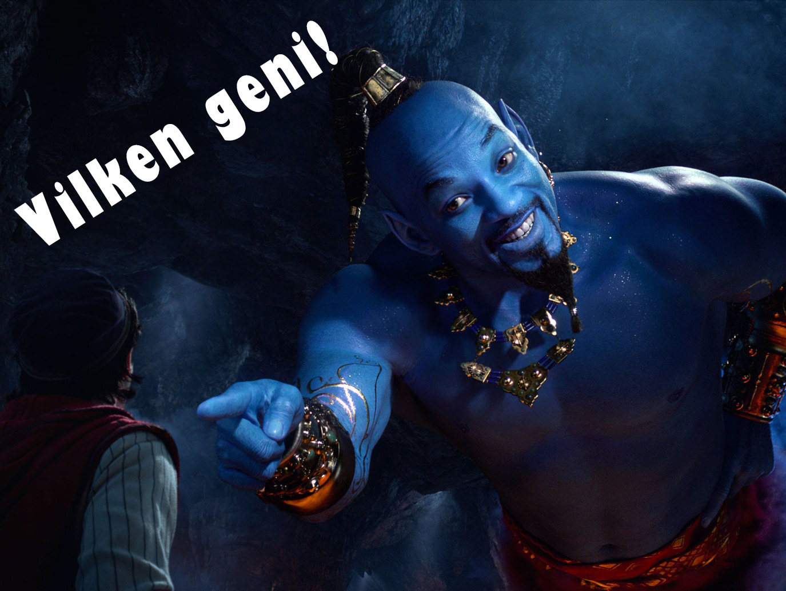

Välkommen till vår fotbollsquiz
Läs frågorna noga innan du besvarar dem.
Hur bredd kan en fotbollsplan vara?
30 - 60 meter
45 - 90 meter
60 - 120 meter
80 - 130 meter
Hur lång kan en fotbollsplan vara?
80 - 130 meter
70 - 150 meter
90 - 120 meter
100 - 150 meter
Kan en fotbollsplan vara kvadratisk?
I mitten av fotbollsplan finns det en cirkel. Hur lång är dess radie?
8,15 meter
9,15 meter
10,15 meter
11,15 meter
Det finns en kvartscirkel i varje hörn av planen. Dess radie är på
0,50 meter
1,0 meter
1,25 meter
1,50 meter
Hur många spelare ska det fotbollslags startuppställning bestå av?
Hur många avbytare ska det max finnas ute på bänken?
Hur många 45 minuters halvlekar innefattas i en match?
Om matchen är en seriematch och avgör vilket lag som ska kvalificiera sig efter den och den avslutas med ett jämnt resultat tilllägger domaren två halvlekar till matchen där varje extra halvlek består av..........
13 minuters spel
14 minuters spel
15 minuters spel
16 minuters spel
Hur stor är ett fotbollsmål?
4,32 m brett och 2,14 m högt
5,32 m brett och 2,24 m högt
6,32 m brett och 2,34 m högt
7,32 m brett och 2,44 m högt
Visa resultat

du klarade
av 10 frågor.
tillbaka